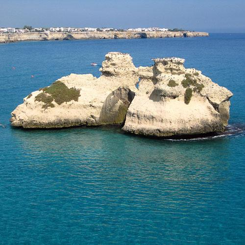

Torre dell'Orso
I faraglioni "Le Due Sorelle" e acque azzurre. Spiaggia lunga di sabbia bianca, uno dei litorali più fotogenici del Salento adriatico.
Il Salento è la penisola più meridionale della Puglia, bagnata a est dall'Adriatico e a ovest dallo Ionio. Comprende la provincia di Lecce e porzioni di Brindisi e Taranto. Lecce, soprannominata "la Firenze del Sud", è capitale del barocco pugliese: le chiese e i palazzi sono intagliati nella tenera pietra leccese color miele. Gallipoli è una città su un'isola calcarea, Otranto è il punto più orientale d'Italia. In estate il Salento si trasforma nel cuore della movida pugliese; d'inverno rivela i suoi borghi senza folla e la sua gastronomia autentica.